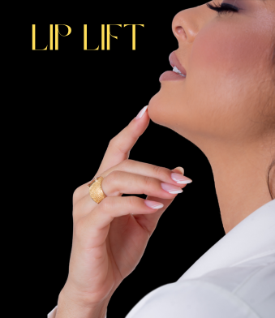

CONHEÇA O PROCEDIMENTO QUE LEVANTA E DÁ VOLUME AOS LÁBIOS!
Seus lábios estão finos ou invertidos?
Sente que seus dentes quase não aparecem ao falar e ao sorrir?
Já tentou o preenchimento com ácido hialurônico e não ficou satisfeita com o resultado?
Te apresento a mais NOVA técnica cirúrgica minimamente invasiva que vem transformando sorrisos e elevando a autoestima!

O LIP LIFT é uma técnica cirúrgica que reposiciona os lábios, corrigindo o filtro labial longo,isto é,
a distância longa entre a base do nariz e o lábio superior, e que consequentemente esconde os dentes ao sorrir e ao falar;
além disso ela everte os lábios que estão finos e invertidos (“ pra dentro”), trazendo o aspecto de maior espessura da porção
vermelha dos lábios.
Essa característica pode ser proveniente do envelhecimento facial ou até mesmo uma característica do biotipo facial de pacientes jovens.
O procedimento é realizado no consultório odontológico, sob anestesia local e dura em média 1h30min.
FONTE: Instagram/drcharlesroza
“Mas Dra, e a cicatriz?”
O diferencial da técnica que eu utilizo é sobretudo a forma como é feita a sutura. Os pontos são na sua maioria internos e intradérmicos, isto é, feitos por dentro da pele, ficando quase imperceptíveis no pós-operatório.
Após os primeiros 7 dias removemos os pontos.
A partir do décimo quinto dia da cirurgia damos início ao Gerenciamento da Cicatriz, com aplicação de fármacos intradérmicos e sessões de laser, que vão favorecer ainda mais uma cicatrização excelente da região, sem quaisquer fibroses ou quelóides . Um cuidado a mais que oferecemos a todos os nossos pacientes!


CHEGOU A SUA HORA!
VOCÊ QUER SABER MAIS DETALHES E SE TEM REAL INDICAÇÃO PARA O LIP LIFT?
Clique no SAIBA MAIS e agende sua consulta gratuita ON-LINE ou PRESENCIAL comigo!
SAIBA MAIS
POR QUE A VIVIAN?
Para mim, facilitar o sorriso do próximo sempre foi uma oportunidade de levar e sentir o amor de Deus!
Foi buscando viver isso que me formei em odontologia na universidade federal do Espírito Santo em 2016.
Não muito tarde, em 2017, enxerguei nos procedimentos estéticos da harmonização facial um meio de ampliar meus resultados.
Assim, me especializei na área em 2019 e desde então vejo meu propósito se alargar por meio da elevação da autoestima e o
resgate do amor próprio com as técnicas de rejuvenescimento facial.
Provocar sorrisos novos, olhares transformados e almas renovadas são minha satisfação pessoal e meu propósito de vida!